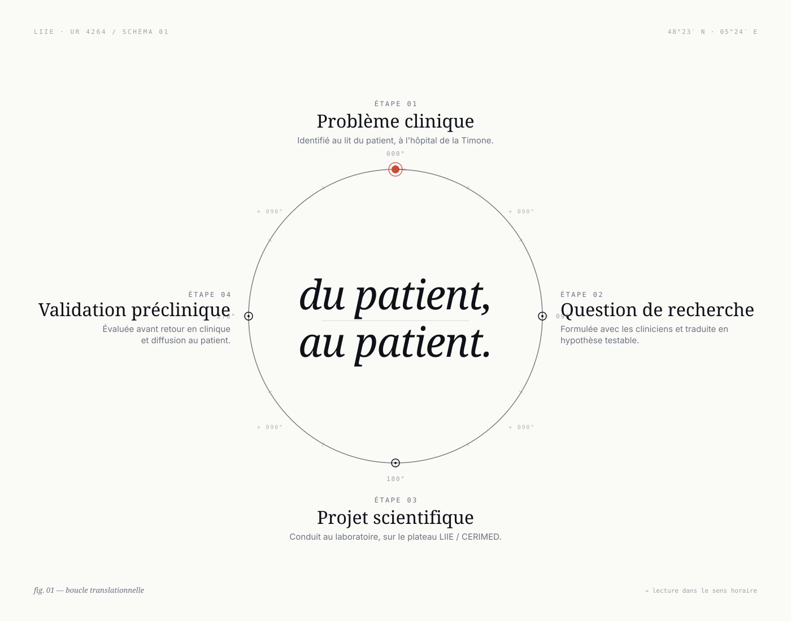
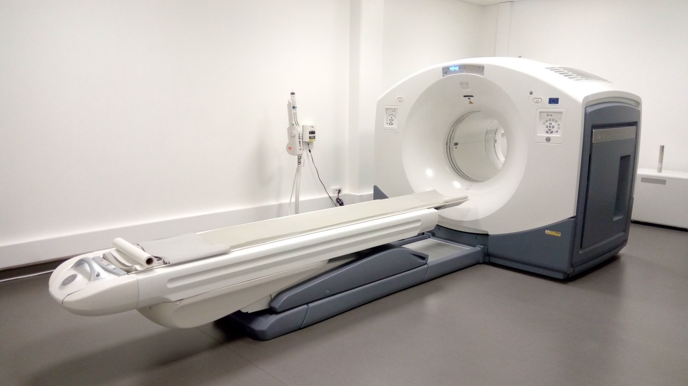

Un laboratoire dédié aux thérapeutiques guidées par l'imagerie
Le LIIE est une unité de recherche affiliée à Aix-Marseille Université (UR 4264). Il est intégré à la plateforme CERIMED dès son inauguration — bâtiment construit à cette occasion, sur le campus hospitalo-universitaire de la Timone.
Identité et missions
Le Laboratoire d'Imagerie Interventionnelle Expérimentale (LIIE) est une unité de recherche affiliée à Aix-Marseille Université, en lien étroit avec l'Assistance Publique — Hôpitaux de Marseille. Le laboratoire a intégré la plateforme CERIMED dès son inauguration, dans un bâtiment créé pour l'accueillir sur le campus hospitalo-universitaire de la Timone.
Sa mission : concevoir, évaluer et faire adopter les thérapeutiques guidées par l'imagerie, avec une spécificité forte sur les techniques d'embolisation. Les travaux s'organisent en boucle translationnelle — du patient au laboratoire et retour au patient.
Du patient au laboratoire et retour au patient
Toutes les recherches du LIIE s'inscrivent dans une boucle translationnelle en quatre étapes, qui relient la clinique au laboratoire et inversement.

Axes de recherche
La thématique globale du laboratoire — les thérapeutiques guidées par l'imagerie — se décline en trois axes complémentaires, qui structurent le passage de l'idée au patient : de la conception d'un dispositif à sa validation clinique et à sa diffusion.
Axe 1 — Embolisation
L'embolisation — occlusion ciblée d'un vaisseau par voie endovasculaire — est un geste central en radiologie interventionnelle. Le LIIE travaille sur l'ensemble du continuum : conception et évaluation de nouveaux agents (naturels, éco-conçus, composites), optimisation du geste, extension à de nouvelles indications, diffusion dans des environnements variés (soins courants, contextes à ressources limitées, contextes extrêmes).
Cet axe est porté par plusieurs projets complémentaires : EmboBio, FairEmbo, Emborrhoïd® et IRIS — chacun explorant une facette différente de l'embolisation (matériau, accès, indication clinique, environnement d'intervention).
Axe 2 — Recherche préclinique
La recherche préclinique est une signature du laboratoire. Elle repose sur :
- des protocoles standardisés d'anesthésie et de chirurgie — vasculaire, urologique, digestive, obstétricale ;
- un accès privilégié à l'imagerie multimodale (radioscopie interventionnelle, CT, IRM 3 T, TEP-CT, échographie) ;
- une équipe pluridisciplinaire associant radiologues, anesthésistes, pathologistes, chirurgiens, ingénieurs et techniciens ;
- un suivi histopathologique systématique permettant la corrélation entre l'imagerie et les effets tissulaires.
Cet environnement préclinique constitue l'atout central pour l'évaluation rigoureuse de nouveaux agents emboliques, mais aussi pour la simulation de gestes cliniques complexes (embolisation splénique, prostatique, tubaire, etc.).
Axe 3 — Innovation translationnelle & partenariats
Le LIIE cultive un modèle d'innovation translationnelle ouvert aux partenariats : brevets déposés avec des acteurs académiques et privés, spin-off industrielles (EmboBio Medical, 2022), prestations de recherche avec l'industrie, collaborations cliniques multicentriques françaises et internationales.
Cette ouverture se double d'une dimension humanitaire et éthique marquée : diffusion de techniques abordables dans les pays à ressources limitées (FairEmbo), formation de cliniciens au Sénégal, Cambodge, Cameroun, Côte d'Ivoire, et engagement dans l'adaptation de la radiologie interventionnelle aux environnements extrêmes — y compris spatiaux, avec le projet IRIS.
Plateau technique
Le LIIE est en charge du secteur radiologique du CERIMED et y opère un plateau technique dédié à la recherche préclinique et aux thérapeutiques guidées par l'image. Il s'appuie en complément sur les autres modalités et équipements de la plateforme.
Plateau LIIE — secteur radiologique du CERIMED

Plateau CERIMED — équipements complémentaires
En complément, le CERIMED met à disposition un ensemble d'équipements d'imagerie, de chirurgie et de biologie haut niveau :
Référence : CERIMED — Facilities & Platforms, fiche Plateformes AMU.
Histologie
Le LIIE dispose d'une plateforme d'histopathologie complète, indispensable à la corrélation imagerie-tissu : chaîne complète d'inclusion en paraffine, automates de coloration et d'immunohistochimie (IHC), lecture par les pathologistes de l'équipe.
Nos missions
Concevoir, évaluer et faire adopter de nouveaux dispositifs et stratégies thérapeutiques guidés par l'imagerie — en assurant un continuum entre la recherche préclinique, l'innovation et la clinique, et en contribuant à la formation et à la diffusion de l'expertise française en radiologie interventionnelle.
« Le LIIE bénéficie d'équipements de pointe — en particulier une salle de radiologie interventionnelle et une IRM 3 T — ainsi que d'une expertise ciblée sur la recherche préclinique, ce qui lui confère une très bonne visibilité internationale. »
Tutelles et partenaires
Le LIIE est une unité de recherche à tutelle unique d'Aix-Marseille Université. Il opère en étroite collaboration avec l'AP-HM (service de radiologie interventionnelle de l'Hôpital de la Timone) et les partenaires de la plateforme CERIMED :
- Aix-Marseille Université (AMU)
- Assistance Publique — Hôpitaux de Marseille (AP-HM)
- Centre National de la Recherche Scientifique (CNRS)
- École Centrale Méditerranée
- Institut Paoli-Calmettes
Historique & bilans d'évaluation
- Rapport HCERES vague C — contrat 2024-2028 (PDF)
- Rapport HCERES précédent — 2018 (PDF)
- Fiche officielle AMU — CESAM-Carto
Production scientifique
L'ensemble des publications du laboratoire est accessible via le dépôt institutionnel HAL-AMU et sur PubMed.
Une question, un projet ?
L'équipe est à votre disposition pour étudier les possibilités de collaboration académique ou industrielle.
Nous contacter